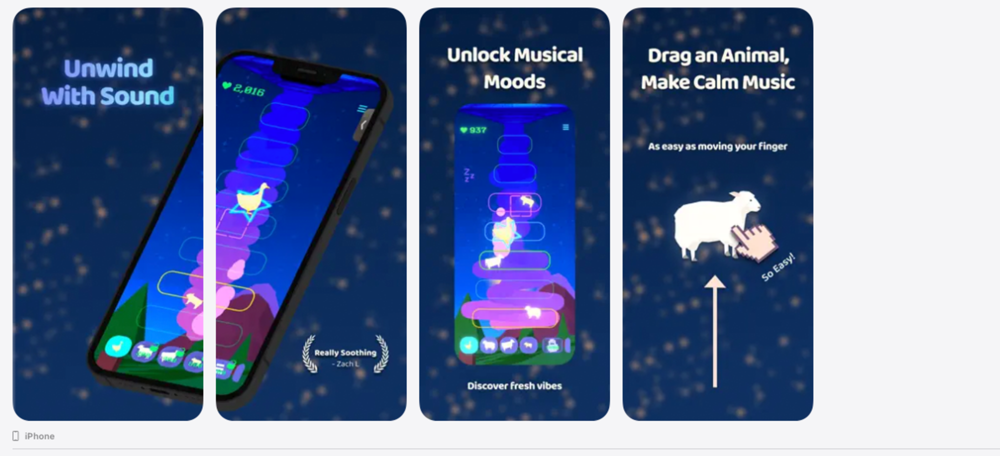
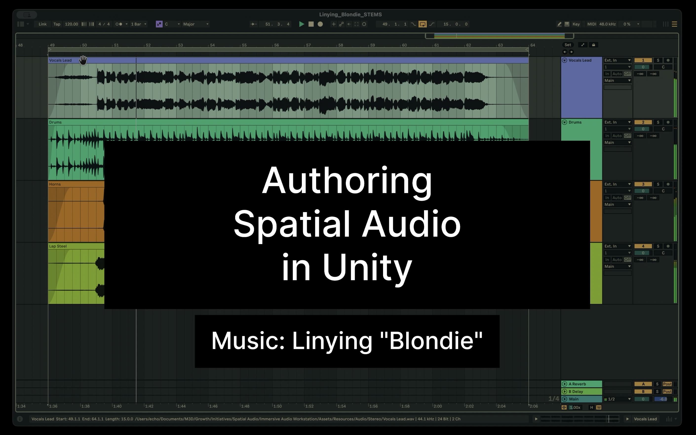

Spatial audio experience / macOS
Spatial audio experience / macOS
Listen, follow, and find. An immersive bird-finding experience guided by spatial sound.
Spatial audio experience / macOS
Listen, follow, and find. An immersive bird-finding experience guided by spatial sound.

Ambient lullaby maker / iOSMake a little space for calm. Lift friendly animals into a glowing UFO beam and compose evolving, ambient music.

Unity tool / Working prototypeCapture audio-object movement in Unity, then combine it with your stems to create an ADM BWF file for spatial audio workflows.
Listen to birds in ever-evolving natural soundscapes. Explore different destinations and discover birds you’re likely to encounter in North America.
Built on Serenity Engine, developed from the technology and design discoveries behind Birdsong.
We build bespoke audio tools and interactive sound systems with game developers and publishers.
Great sound that matches your creative vision.
Alien Emoji is an audio studio led by Amar Ibrahim. With 20 years across audio production, game sound and interactive systems, we connect the technical to the creative.
Our products are a place to experiment. Our collaborations bring the same curiosity to the worlds you build.
Meet AmarTell us about the world you’re building and where sound fits in.